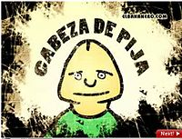
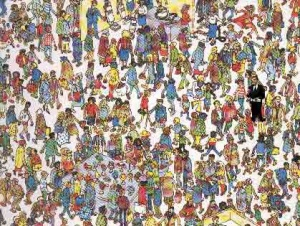

Chachi pistachi
 De: La Frikipedia, la enciclopedia extremadamente seria.
De: La Frikipedia, la enciclopedia extremadamente seria.
 las pijas suelen usar esta expresión
Chachi pistachi (xaxi pistaxi), expresión proveniente de una variante nepalí del latín pero mutado con una reacción química entre grandes dosis de frikismo, amor y mayonesa. Inventado por una princesa que vive en un castillo en una nube, se cree que esta expresión es la auténtica sucesora del ya obsoleto «chachi piruli» que pasó a la historia al ser el título de cierta canción demoníaca. Esta expresión significa "bueno", "guay", "genial", "liberal", etc. Llama la atención por su maravillosa musicalidad y su acentuada cursilería. La expresión suele ir acompañada de un característico gesto de victoria consistente en formar una V con los dedos índice y corazón que no tiene nada que ver con una vagina (sí, sabemos que lo estabas pensando).
Aunque a primera vista no lo parezca, el adverbio "pistachi" no tiene nada que ver con frutos secos. Lo que hace especial a esta expresión es la cara de "¿qué coño has dicho?" que se le queda a la gente cuando la dices.
Ejemplo de utilización: "La Innombrable no es chachi pistachi", "La Frikipedia es chachi pistachi".
Variantes
- Queda genial con el prefijo "super-". Ej.: «El planeta Tierra es super chachi pistachi».
- También se puede abreviar y decir sólo "pistachi", pasando de ser un adverbio a ser un adjetivo. Ej.: «¡Mmmm.. estos nabos a la gallega están pistachi pistachi!»
- En casos de frikismo extremo las palabras "chachi" o "pistachi" por separado pueden utilizarse con un complemento omnisciente de toda palabra. Ej.: «Voy a coger una cogorza pistachi», «Me voy corriendo pistachi que viene la Innombrable», «Este manual de preauciones pistachi de cómo usar una cuchara que me leído está chachi guay».
Posturas
 Ejemplo de una obra literaria chachi pistachi
Debido a su naturaleza de expresión linda o cute, hay mucha gente que la odia. Es más, en Ivalice, el país multicolor de la Moncloa, el uso de esta expresión está condenado con la muerte. De esto deducimos que hay tres posturas ante el chachi pistachi:
- Pistachistas: Utilizan esta expresión a diario a pesar de la vergüenza ajena que ésta genera. Luchan contra insultos, críticas y demás. Siempre son frikis machos o hembras que poseen dotes afectivas muy desarrolladas.
- Podríos: Gente a la que la expresión le suena como lo que es de verdad, una chorrada. Suelen tener poca capacidad imaginativa, grandes carencias afectivas o se creen l@s más mach@s. Los canis suelen estar en esta postura.
- Chanos: Son los que les da igual, les importa tres cojones que digan o no esta puta frase.
- Tokiohoteleras: Han tomado esta expresión después de que la paloli de la traducción de uno de sus DVDs pusiera a mala leche Chachi pistachi. Éstas pobres criaturas van por el mundo diciendo Chachi pistachi para imitar a su ídolo... Todavía no saben la cruda verdad y creen que realmente el de los pelos dijo Chachi pistachi en su idioma original cuando todos sabemos (hasta tú lo sabes, lo que pasa es que ayer se te olvidó, tontac@) que es una expresión intraducible y que cualquier intento de ser expresada en otra lengua puede desembocar en catástrofe nuclear de escala mundial.
Hay un degenerado mental violador de viejas octogenarias que se hace llamar el Chachi.
Autor(es):
- Krusher
- MURO DE AGUAS
- Aque
- Cristian chachi 100
- SarandOnga
- Cibercrank
- Mªr!ª la loka!!!
- Lightdreamer
- Mel-o
- Juanjo93
Frikipedia 2005-2016, Licencia
GFDL 1.2 - Extraído por FrikiLeaks